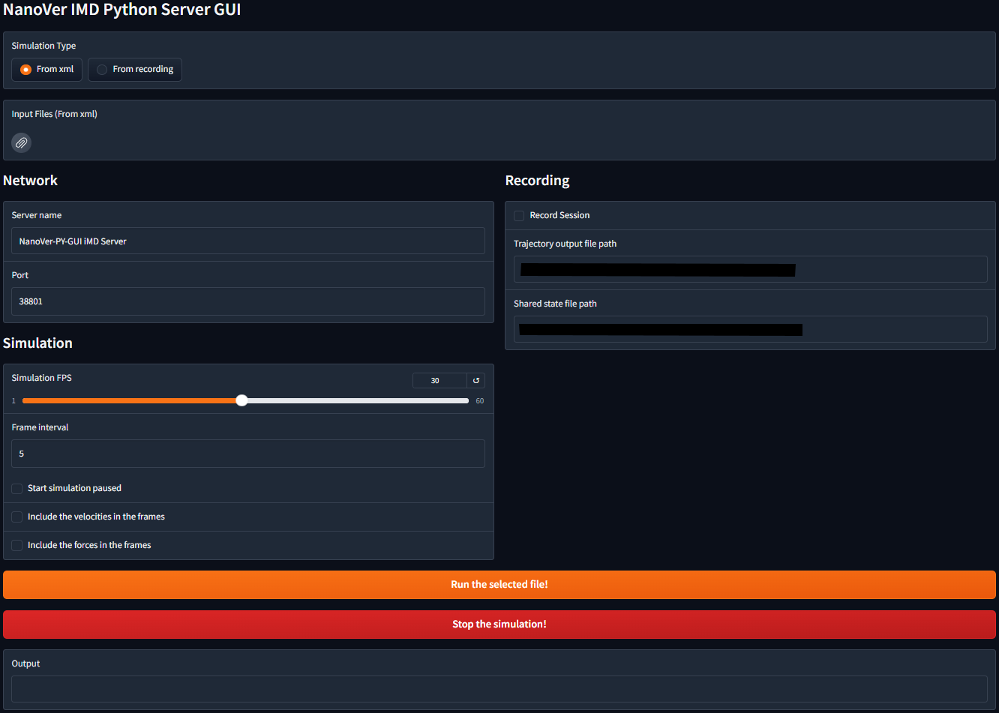

NanoVer Basics
This page is a great starting point for those who are new to NanoVer. Make sure that you have already installed NanoVer, so that you can use the information on this page to start running interactive molecular dynamics (iMD) simulations with NanoVer.
Jupyter notebook tutorials
We provide a set of short Jupyter notebook tutorials that introduce NanoVer as a framework for running interactive molecular dynamics simulations. These notebooks are designed to provide new users with some basic examples that demonstrate how to get up and running with NanoVer, and exhibit some core features of NanoVer in a quick, intuitive way. If you are new to NanoVer, these tutorials are the perfect place to start!
Here we give a summary of the available Jupyter notebook tutorials, that can be found in the examples folder of the GitHub repository:
getting_started: New to NanoVer? Start here! An introductory notebook that showcases how NanoVer can be used to run an interactive molecular dynamics (iMD) simulation for a pre-prepared methane & nanotube system.
recording_and_replaying: An introductory notebook that demonstrates how NanoVer can be used to record and replay iMD simulations.
multiple_simulations: This notebook demonstrates how to load and run multiple simulation files using a single OmniRunner server, providing default visualizations, and details how to switch between them using the Jupyter notebook and VR interfaces.
nanover_nglview: A notebook that assumes a server is already running, and visualises it with NGLView.
runner_GUI: A notebook that demonstrates how to use the NanoVer GUI to run a server.
Running a server
There are two NanoVer servers available:
The NanoVer Python Server, found in the nanover-server-py git repo. This server is written in python and is the go-to server for NanoVer users.
The NanoVer Rust Server, found in the nanover-server-rs git repo, and is written in Rust. We include brief instructions for using this server on this page, but we recommend using the Python Server.
The NanoVer Python server
The NanoVer Python Server package can be installed using conda (see User Installation Guide) or using the source code (see Developer Installation Guide). Once installed, you can run a NanoVer server using either (a) a python script or Jupyter notebook or (b) the command line.
via a python script or notebook
For running a NanoVer server using a python script or Jupyter notebook, please see our Tutorials page. If you are new to NanoVer, we recommend starting with our getting_started notebook.
via the command line
Once you have the nanover-server package installed in your conda environment, you will be able to use the
nanover-omni command to run a server.
This server can take any of the following:
A NanoVer OpenMM simulation
A NanoVer OpenMM simulation with ASE as an interface
A NanoVer recording, with either or both of the trajectory and shared state recording files
Note that you can give the simulations/recordings either explicitly as a string or simply by typing the file path. Here are some example commands:
# load a single NanoVer OpenMM simulation
nanover-omni --omm "my-openmm-sim.xml"
# load multiple simulations
nanover-omni --omm "my-openmm-sim-1.xml" "my-openmm-sim-2.xml" --omm-ase "my-ase-omm-sim.xml"
# load a NanoVer recording
nanover-omni --playback "my-recording.state" "my-recording.traj"
For more information about the arguments provided with this command, type:
nanover-omni --help
via the GUI
The python GUI creates a web-based graphical interface for running a NanoVer Server. It supports both real-time simulations from NanoVer OpenMM XML files and playback of recorded trajectories. The interface provides controls for simulation parameters, network settings, and trajectory recording options.
To run a server via the GUI there are two options:
Open the
runner_GUI.ipynbnotebook where you will find a step by step guide on how to use the GUI.Run the GUI directly from the command line by running
UI.py.
If everything is set up correctly, you should see the following interface:
{kind=link}
The NanoVer Rust Server
The NanoVer Rust Server is compiled into an executable (or equivalent, depending on your operating system), rather than being installed on your computer. For this, you have two options:
Download the latest release from the git repo, ensuring you choose the correct option for your operating system.
Compile it yourself using the source code by following the instructions in the README.
This program can run NanoVer OpenMM simulations and NanoVer recordings (but not simulations that use ASE as an interface) and has many features, including:
Recording NanoVer sessions
Loading multiple simulations and/or recordings onto a single server, and switching between them while the server is running
A graphical user interface (GUI), useful for new users to familiarise themselves quickly and easily with the various options offered by NanoVer
To run the server, first, navigate to the build directory:
If you have downloaded the latest release, extract the files from the zip folder and navigate to the build directory: this directory will be named
{operating_sys}-build(e.g.windows-build).If instead you have compiled from source, navigate to the build directory (e.g.
cd {path_to_repo}/target/releaseon MacOS).
Here you are provided with two executables for running a server:
An executable for running via the command line (e.g.
nanover-cli.exeon Windows)An executable for running via the GUI (e.g.
nanover-gui.exeon Windows)
Warning
On MacOS, the first time you run either nanover-cli or nanover-gui from a downloaded release, it
is necessary to open the executables manually by
Opening the build directory in Finder
Right-clicking the executables and selecting
OpenWhen prompted, click
Open
The same needs to be done for the libOpenMM executables in the lib and lib/plugins directories.
via the command line
To run the server using the command line, run the executable as a command, passing it the path to your NanoVer simulation file, e.g.:
# Windows Powershell
.\nanover-cli.exe "my-openmm-sim.xml"
# MacOS/Linux
./nanover-cli "my-openmm-sim.xml"
# if you are not in the same directory as this executable, you will need to give the entire file path
# e.g. for Windows Powershell
.\path\to\build\directory\nanover-cli.exe "my-openmm-sim.xml"
The server can serve multiple simulations: just pass it multiple input files.
# load several simulations onto the server by passing multiple simulation files, e.g. Windows Powershell
.\nanover-cli.exe "my-openmm-sim-1.xml" "my-openmm-sim-2.xml"
For more information about the arguments provided with this command, type:
# Windows Powershell
.\nanover-cli.exe --help
# MacOS/Linux
./nanover-cli --help
via the GUI
To run the server via the GUI, open the nanover-gui executable (or run it via the command line e.g.
./nanover-gui on MacOS) and you will see the following interface:
{kind=link}
Simply click Run demonstration input! to run a demo simulation. Alternatively, click +OpenMM and select your
own NanoVer OpenMM XML file, then click Run! to start the server. You can also add NanoVer recordings by
clicking +Recording and selecting your trajectory (.traj) and shared state (.state) files.
Please click on the headings to open up menus to customise your server further: Verbosity, Network,
Simulation, and Recording.
For further information about these options, use the help function in the command line.